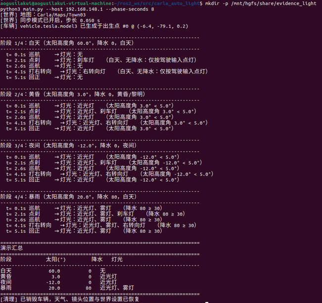
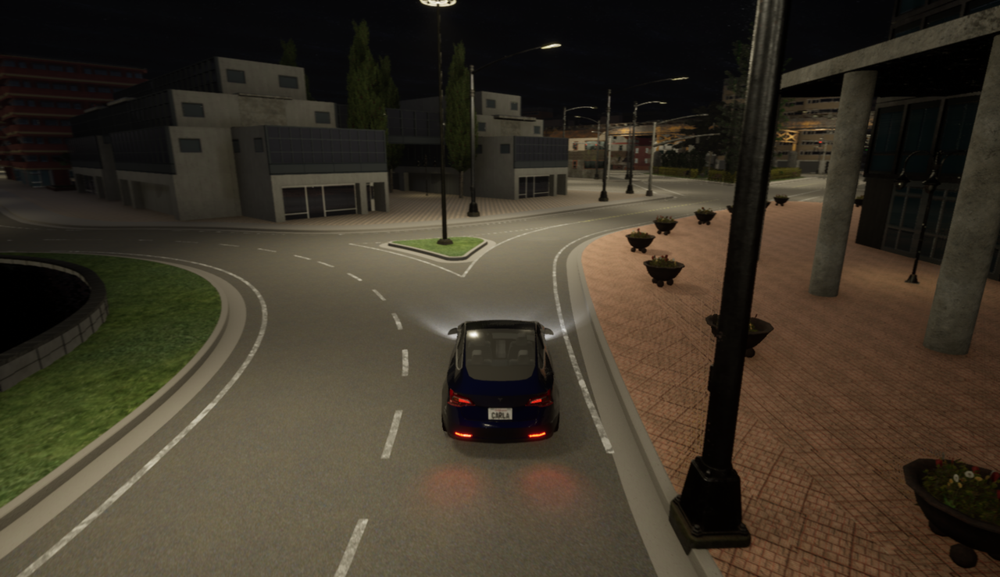

基于 CARLA 的地面载具灯光自动控制
本模块在 CARLA 中根据环境亮度与驾驶输入自动控制车辆灯光：近光灯、雾灯、 转向灯与刹车灯。演示按"白天 → 黄昏 → 夜间 → 暴雨"四个阶段切换天气， 每个阶段内依次执行"巡航 → 点刹 → 打右转向 → 回正"，四类灯各演一遍。
1. 运行环境
| 项目 | 版本 / 说明 |
|---|---|
| 宿主机 | Windows 11，CARLA 0.9.16（解压后双击 CarlaUE4.exe） |
| 虚拟机 | Ubuntu 22.04 LTS（VMware），ROS 2 Humble，Python 3.10.12 |
| Python 依赖 | carla==0.9.16（见功能包内 requirements.txt） |
安装依赖：
cd src/ground/carla_auto_light
python3 -m pip install --user -r requirements.txt -i https://pypi.tuna.tsinghua.edu.cn/simple
2. 目录结构
src/ground/carla_auto_light/
├── main.py 统一入口（仓库约定：入口为 main.*）
├── main.sh / main.bat 一键入口
├── carla_auto_light/
│ ├── light_logic.py 纯决策逻辑：阈值表 + 转向灯状态机（可离线单测）
│ ├── carla_utils.py CARLA 连接、同步步进、天气切换、灯光位掩码、跟随镜头
│ ├── app.py 命令行入口与四阶段演示流程
│ └── light_node.py ROS 2 节点：演示并发布 /vehicle/lights
├── test/test_light_logic.py 纯逻辑单元测试（53 项，不需要 CARLA）
├── launch/main.launch.py ROS 2 启动入口
├── requirements.txt / package.xml / setup.py / setup.cfg
└── README.md
3. 控制原理
3.1 昼夜判断依据
CARLA 的 carla.WeatherParameters 直接给出太阳高度角（度），它比"读相机图像算亮度"更稳定：
- 不受视角、曝光、后处理影响；
- 取值连续，阈值可以直接写在文档里并按需调整。
本模块用的阈值：
| 参数 | 取值 | 含义 |
|---|---|---|
SUN_HEADLIGHT_ON |
5° | 太阳高度角 ≤ 5° 判为黄昏/黎明，开近光灯 |
SUN_NIGHT |
-5° | ≤ -5° 判为夜间（仅用于日志分级） |
PRECIPITATION_FOG |
30 | 降水强度 ≥ 30 时同时开雾灯 |
STEER_BLINKER_ON |
0.15 | 方向盘绝对值 ≥ 0.15 打转向灯 |
STEER_BLINKER_OFF |
0.05 | 方向盘回到 0.05 以内（含）转向灯自动熄灭 |
BRAKE_LIGHT_ON |
0.05 | 刹车量 ≥ 0.05 点亮刹车灯 |
即"该不该开灯"由下式决定（ 为太阳高度角， 为降水强度）：
3.2 转向灯状态机（回正自动熄灭）
真实汽车的方向盘下方有回位机构：打了转向灯之后，必须把方向盘打够角度再回到中位， 转向灯才会自动熄灭；只把方向盘轻轻动一下不会触发。这里用两个阈值复现（阈值本身即触发，全部含边界）。转向灯只看驾驶员指令，车道保持算出的微调量不参与判断——否则车在弯道上会一直闪。
行为细节：
- 锁存：方向盘一旦越过 0.15 就点亮并记住，此后方向盘在 0.05~0.15 之间摆动不会熄灭；
- 回正熄灭：方向盘回到 ±0.05 以内才熄灭，符合"先打到底再回正"的驾驶习惯；
- 左右互斥：确定一侧时另一侧必然熄灭，避免同时点亮。
3.3 灯光位掩码
CARLA 用位掩码表示灯光，本模块把决策结果映射过去：
| 决策字段 | CARLA 位 |
|---|---|
low_beam |
VehicleLightState.LowBeam |
fog |
VehicleLightState.Fog |
left_blinker / right_blinker |
VehicleLightState.LeftBlinker / RightBlinker |
brake_light |
VehicleLightState.Brake |
注意：
vehicle.set_light_state()只接受carla.VehicleLightState对象， 直接把位掩码当int传会抛Boost.Python.ArgumentError: set_light_state(Vehicle, int) did not match C++ signature。 正确写法是carla.VehicleLightState(flags)再传入。
4. 运行步骤
4.1 启动 CARLA 服务端（Windows）
解压 CARLA 0.9.16 后双击 CarlaUE4.exe，等待城市画面出现。
4.2 查询宿主机 IP（Windows）
ipconfig
在 VMware Network Adapter VMnet8 一节找到 IPv4 地址（形如 192.168.x.1），替换下面命令里的地址。
4.3 虚拟机连通性检查
Ubuntu 22.04 默认没有 nc，先装一次：
sudo apt install -y netcat
nc -vz 192.168.148.1 2000
出现 succeeded! 说明能访问 CARLA 的 RPC 端口。若不想装包，也可以用 Python 直接试连：
python3 -c "import socket;s=socket.socket();s.settimeout(3);print(s.connect_ex(('192.168.148.1',2000)))"
输出 0 表示端口可达。
4.4 编译功能包
mkdir -p ~/ros2_ws/src && cd ~/ros2_ws/src
git clone --depth 1 https://github.com/OpenHUTB/ros2.git
cp -r ~/ros2_ws/src/ros2/src/ground/carla_auto_light ~/ros2_ws/src/
cd ~/ros2_ws
source /opt/ros/humble/setup.bash
colcon build --packages-select carla_auto_light --symlink-install
source install/setup.bash
ros2 pkg executables carla_auto_light
预期输出：Summary: 1 package finished，并列出 carla_auto_light auto_light_node。
4.5 离线单元测试（不需要 CARLA）
cd ~/ros2_ws/src/carla_auto_light
python3 test/test_light_logic.py
预期输出：[结果] 53 项全部通过。这 53 项覆盖了阈值边界、四类灯的触发条件、
状态机的锁存/回正熄灭/左右互斥，以及日志名称转换。先跑它再连 CARLA，
可以把"逻辑错"与"仿真器问题"分开。
4.6 运行演示
python3 main.py --host 192.168.148.1
默认按 仿真时间 1:1 播放（每阶段 6 秒，全程约 24 秒），并用第三人称跟随镜头 观察车辆，方便看清灯光切换。想更快或更慢：
python3 main.py --host 192.168.148.1 --phase-seconds 10 # 每阶段 10 秒
python3 main.py --host 192.168.148.1 --fast # 关闭实时节奏
python3 main.py --host 192.168.148.1 --no-follow # 关闭跟随镜头
4.7 用 ROS 2 launch 启动
cd ~/ros2_ws && source install/setup.bash
ros2 launch carla_auto_light main.launch.py host:=192.168.148.1
节点除了跑同一套演示，还会把当前灯光状态发布到 /vehicle/lights：
ros2 topic echo /vehicle/lights
# data: 近光灯、雾灯
5. 参数说明
| 参数 | 默认值 | 说明 |
|---|---|---|
--host |
127.0.0.1 |
Windows 宿主机 IP |
--port |
2000 |
CARLA RPC 端口 |
--town |
Town03 |
地图 |
--dt |
0.05 |
同步模式步长（秒） |
--vehicle |
vehicle.tesla.model3 |
车型 blueprint |
--spawn-index |
-1 |
出生点编号，-1 表示自动挑选 |
--phase-seconds |
6 |
每个天气阶段时长（秒） |
--fast |
关闭 | 关闭实时节奏 |
--no-follow |
关闭 | 关闭第三人称跟随镜头 |
6. 结果与性能
一次完整运行的终端输出如下：
阶段 1/4：白天（太阳高度角 60.0°，降水 0，白天）
t= 0.1s 巡航 → 灯光：无
t= 2.1s 点刹 → 灯光：刹车灯
t= 4.1s 打右转向 → 灯光：右转向灯
t= 5.1s 回正 → 灯光：无
阶段 2/4：黄昏（太阳高度角 3.0°，降水 0，黄昏/黎明）
t= 0.1s 巡航 → 灯光：近光灯
t= 2.1s 点刹 → 灯光：近光灯、刹车灯
t= 4.1s 打右转向 → 灯光：近光灯、右转向灯
t= 5.1s 回正 → 灯光：近光灯
阶段 3/4：夜间（太阳高度角 -12.0°，降水 0，夜间）
t= 0.1s 巡航 → 灯光：近光灯
…（与黄昏阶段一致）
阶段 4/4：暴雨（太阳高度角 20.0°，降水 80）
t= 0.1s 巡航 → 灯光：近光灯、雾灯
t= 2.1s 点刹 → 灯光：近光灯、雾灯、刹车灯
t= 4.1s 打右转向 → 灯光：近光灯、雾灯、右转向灯
t= 5.1s 回正 → 灯光：近光灯、雾灯
四阶段汇总：
| 阶段 | 太阳高度角 | 降水 | 灯光 |
|---|---|---|---|
| 白天 | 60.0° | 0 | 无 |
| 黄昏 | 3.0° | 0 | 近光灯 |
| 夜间 | -12.0° | 0 | 近光灯 |
| 暴雨 | 20.0° | 80 | 近光灯、雾灯 |


6.1 结果是否合理
- 白天只按驾驶输入点灯：巡航时全灭、点刹亮刹车灯、打方向亮转向灯、回正后熄灭；
- 黄昏与夜间近光灯常亮，刹车灯与转向灯在其上叠加；
- 暴雨（太阳 20°，同属白天）因降水达 80 而开近光灯与雾灯；
- 转向灯在"回正"动作后自动熄灭，不会一直亮到下一次打方向。
6.2 已知限制
- 阈值是经验值：5° / 30 / 0.15 取自常见工程实践，未按具体车型灯具标定；
- 只看降水不看能见度：CARLA 没有直接给出能见度，雾天（
fog_density）未单独判断， 若要区分"浓雾"可增加fog_density条件； - 灯光是视觉表现：CARLA 的车灯不影响其他车辆的感知，本模块只验证"状态决策→ 执行器"的正确性；
- 转向灯只按方向盘判断：没有读取导航意图（例如导航即将右转时提前打灯）， 真实系统里应由上游规划器给出转向意图。
7. 源码解析
7.1 light_logic.py：纯决策，可离线测试
| 函数 / 类 | 作用 |
|---|---|
sun_phase(sun_altitude) |
太阳高度角 → 白天 / 黄昏 / 夜间（仅日志用） |
decide_lights(sun, precipitation, steer, brake) |
环境与驾驶输入 → 应点亮的灯光字典 |
BlinkerStateMachine.update(steer) |
转向灯锁存与回正熄灭 |
compose_state(decision, blinker_state) |
合成最终状态（状态机优先） |
state_to_names(state) |
转成中文名单，用于日志与话题 |
之所以做成纯函数：灯光决策不需要仿真器就能验证。53 项单元测试里没有一行 CARLA 代码， 涵盖阈值边界（太阳 5°、降水 30、方向盘 0.15 / 0.05、刹车 0.05）与状态机的全部转移。
7.2 carla_utils.py：连接与"干净的退出"
LightSession打开同步模式前会先检查残留的同步状态（上次异常退出留下的）， 先恢复异步再记录"原始设置"，避免退出时无法还原；- 记录并还原三样东西：天气、观察者镜头位置、世界设置。跟随镜头会把观察者挪到车后， 不还原的话下次打开 CARLA 视角会停在上一段演示的终点；
light_state_to_carla负责字典 →carla.VehicleLightState的映射（含上面提到的int与对象之争）。
7.3 app.py：四个阶段的演示编排
每个阶段内的时间窗是固定的：2.0~2.5 s 点刹、4.0~5.0 s 打右转向、之后回正， 因此每次运行的灯光变化序列完全一致，便于截图与核对。
8. 常见问题
Q1：Boost.Python.ArgumentError: set_light_state(Vehicle, int) did not match
把位掩码包成 carla.VehicleLightState(flags) 再传入即可（见 3.3 节）。
Q2：灯光状态打印正确，但 CARLA 窗口里看不到灯亮
车灯是视觉表现，需要在夜间或降水视角下才明显；白天阶段点亮的刹车灯/转向灯
在车尾仍有微弱表现。建议用 --phase-seconds 8 并在"黄昏/夜间/暴雨"阶段观察。
Q3：窗口里视角不动 / 看不到车
默认开启跟随镜头；若用 --no-follow，观察者会停在原地。另外确认没有其它脚本
在抢 world.get_spectator()。
Q4：跑完 CARLA 窗口卡住不动
说明世界还停在同步模式。本模块在 finally 中会还原世界设置；
若进程被强制杀死，下次启动 enable_sync() 会检测并清除残留的同步状态。
Q5：连接超时
依次检查：CARLA 是否启动、--host 是否为 VMnet8 的地址、Windows 防火墙是否放行 2000
（用 nc -vz <host> 2000 验证）。
9. 参考
- CARLA 官方文档：https://carla.readthedocs.io/
carla.VehicleLightState与carla.WeatherParameters接口说明- 仓库既有模块：
carla_keyboard_control（物理仿真与键盘控制）、weather_perception_benchmark（雨雾天气对相机感知的影响）